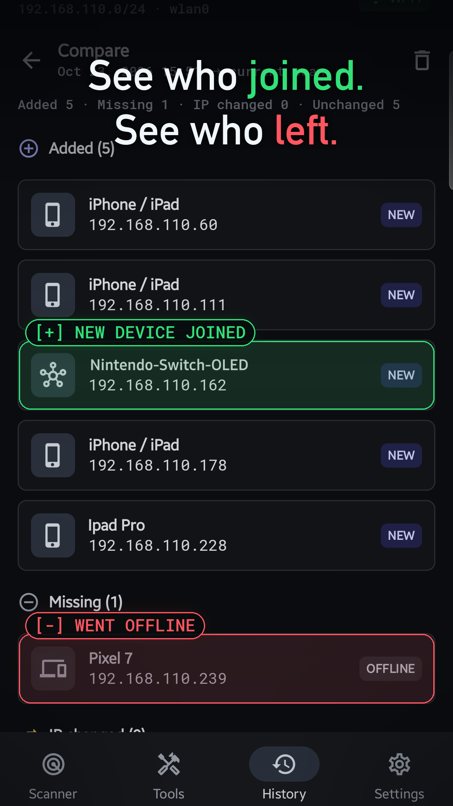
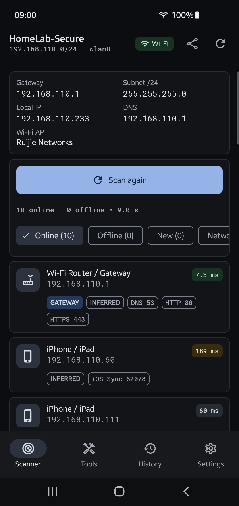
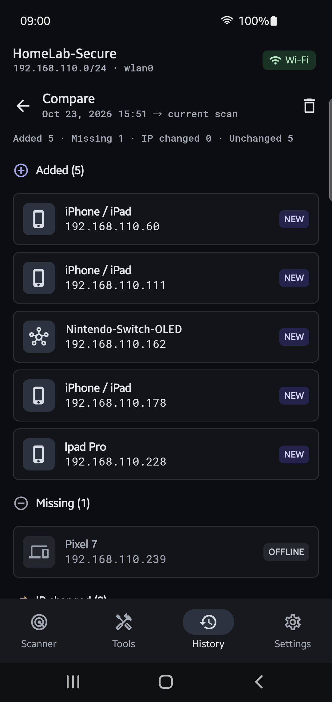
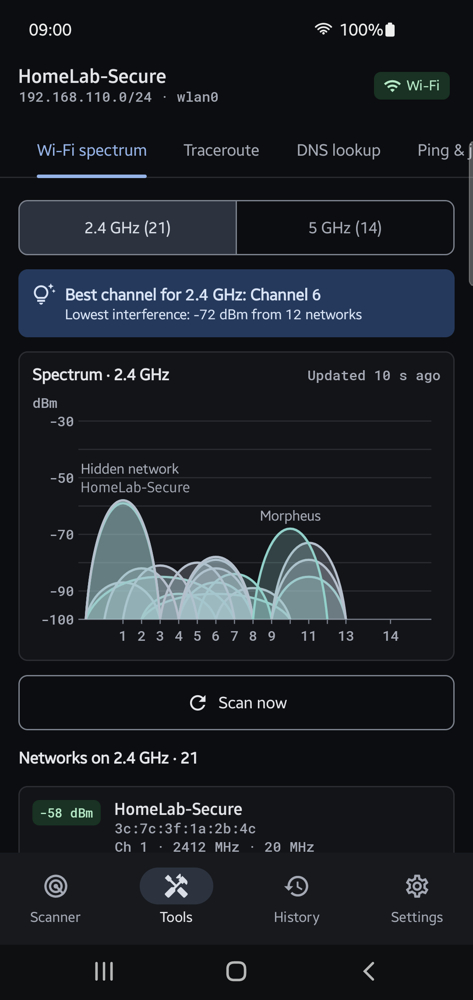
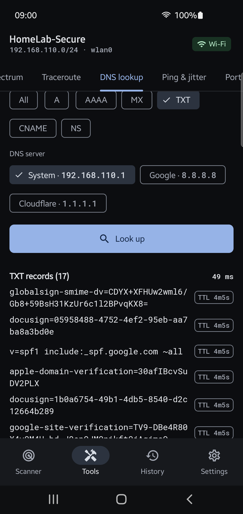

See who's on your Wi-Fi — and what changed.
NetSpectra is a fast, offline-first Wi-Fi & LAN scanner for Android. Scan your network, name every device, and compare scans to catch anything new. No root, no ads, no account.
Android 8.0+ · Free to use · One-time Pro $4.99

Everything to see and understand your network
A clean, private network scanner with the tools you actually reach for.
Who's on your Wi-Fi
Every device with its name, IP, latency and open ports. Names come from mDNS, SSDP, NetBIOS and reverse DNS.
Snapshot Diff
Compare two scans to see which devices joined, left, or changed IP — so a new device stands out instead of hiding in a list.
Wi-Fi channel analyzer
Chart the 2.4 / 5 / 6 GHz bands, see which networks overlap with yours, and get a suggested clearer channel.
Full network tools
Port scanner, ping with jitter and loss, traceroute, DNS lookup (A/AAAA/MX/TXT/CNAME/NS) and Wake-on-LAN.
Fast, no root
A full /24 (254 addresses) scans in about 8–9 seconds on a 2019 Galaxy S10, using unprivileged sockets — no root required.
Private by design
No ads, no analytics, no trackers, no account. Scan data stays on your phone and is never sent to a server.




Simple pricing
Free to scan. One-time Pro — no subscription, ever.
- Full network scan with device names
- Compare your two latest scans
- Wi-Fi channel analyzer
- Port scan, ping, traceroute, DNS, Wake-on-LAN
- Unlimited scan history
- Export to CSV / JSON
- Custom port ranges
- Extra DNS record types (AAAA, MX, TXT, CNAME, NS)
Frequently asked questions
How do I see who's on my Wi-Fi on Android?
Install NetSpectra, connect to your Wi-Fi, and tap Scan. It lists every device on your network with its name, IP address, response time and open ports. Device names come from mDNS, SSDP, NetBIOS and reverse DNS, so phones, laptops, TVs and smart-home gear show real names instead of bare IP addresses.
Does NetSpectra need root?
No. NetSpectra discovers devices using unprivileged ICMP ping sockets plus a TCP check on common ports, so it runs on a normal, non-rooted Android phone. A full /24 of 254 addresses takes about 8–9 seconds on a 2019 Galaxy S10.
Is NetSpectra private? Does my scan data leave the phone?
NetSpectra is offline-first and has no ads, no analytics, no trackers and no account. Scan results are stored only on your device and are never sent to a server. Data leaves your phone only if you export a scan and share it yourself.
Can it show the MAC address or brand of every device?
No. Android 10 and later hide other devices' MAC addresses from apps, so NetSpectra can't show hardware brands for devices on your LAN. Vendor lookup works for Wi-Fi access points using an on-device IEEE database.
Is NetSpectra free?
Yes. Scanning, comparing your two latest scans, the Wi-Fi channel analyzer and the network tools are free. NetSpectra Pro is a one-time $4.99 purchase (US price), not a subscription, and adds unlimited scan history, CSV/JSON export, custom port ranges and extra DNS record types.
What's the difference between a Wi-Fi analyzer and a network scanner?
A network (LAN) scanner lists the devices on your network by IP, with names and open ports. A Wi-Fi analyzer looks at the wireless signal and channels around you. NetSpectra does both: a device scanner with Snapshot Diff, plus a 2.4 / 5 / 6 GHz channel analyzer.
Know exactly what's on your network.
Free to scan, private by design, no root. Grab NetSpectra on Google Play.
Get it on Google Play